BRAND IDENTITY & E-COMMERCESELECTED PROJECT / 01
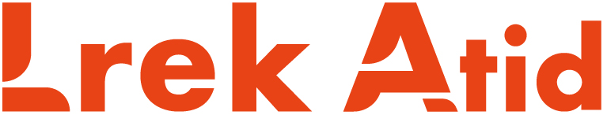
品牌标志 / 产品内容 / 视觉延展DESIGN BY ZHANG QIAN
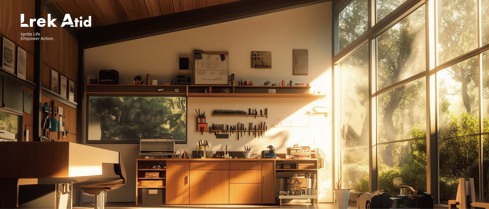
A PLACE TO MAKE THINGS HAPPEN.
01 / IDENTITY从一个标志开始
把行动力，
变成识别力。
围绕工具品类，建立鲜明的品牌标志，并将识别延续至商品卖点、细节与使用场景。
品牌原有的橙色、齿轮轮廓与字标切口，成为本次案例编排和应用延展的共同起点。
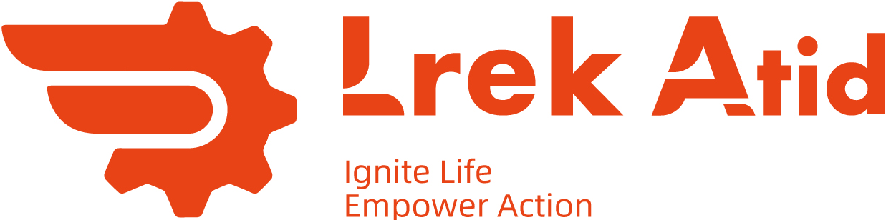
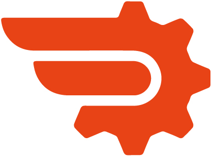
字母切口与图形负形相互呼应，
让图形和文字拥有一致的视觉语气。
02 / VISUAL LANGUAGE由标志延伸
有力量，也有秩序。
用橙色建立辨识，以清晰的对齐与留白承载产品信息。
01 / BRAND ORANGE行动源自原始标志
02 / GRAPHITE力量延展辅助色
03 / WARM WHITE清晰延展辅助色
IGNITE LIFE. EMPOWER ACTION.
READY
FOR ACTION.
品牌语气延展 / CONCEPT↘
03 / BRAND IN USE品牌延展概念
从看见，
到拿在手里。
让标志走进包装、说明卡与封口贴，
把相同的识别带到每一次开箱。
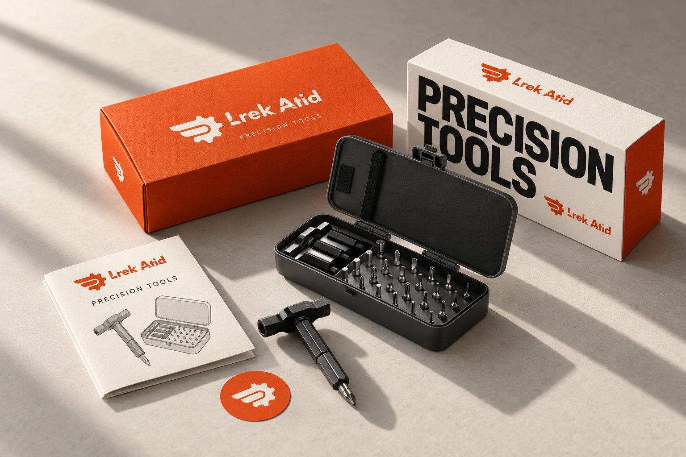
QUICK GUIDE
工具使用说明
工具使用说明
Small tools.
More possibilities.
SELECT.
CONNECT.
GET TO WORK.↗
CONNECT.
GET TO WORK.↗
标志独立应用
减少信息，让识别更集中。
04 / PRODUCT STORY棘轮螺丝刀套装
细节，
就是说服力。
24PCS / BITS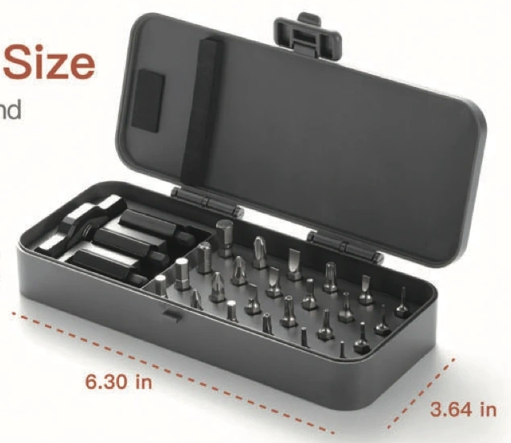
先呈现完整产品，
再把视线带到结构与操作。
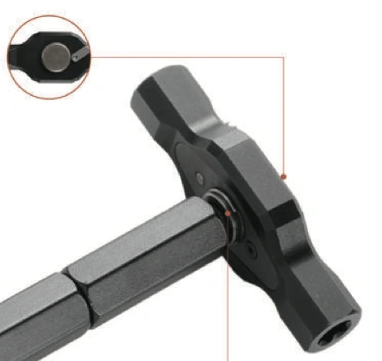
PRODUCT → DETAIL → USE
从“是什么”，到“如何使用”。
让商品内容沿着理解产品的顺序展开。
05 / E-COMMERCE CONTENT原项目 A+ 与商品内容
让信息，
成为购买的线索。
产品全貌、结构特写与使用场景，
共同构成工具产品的内容表达。
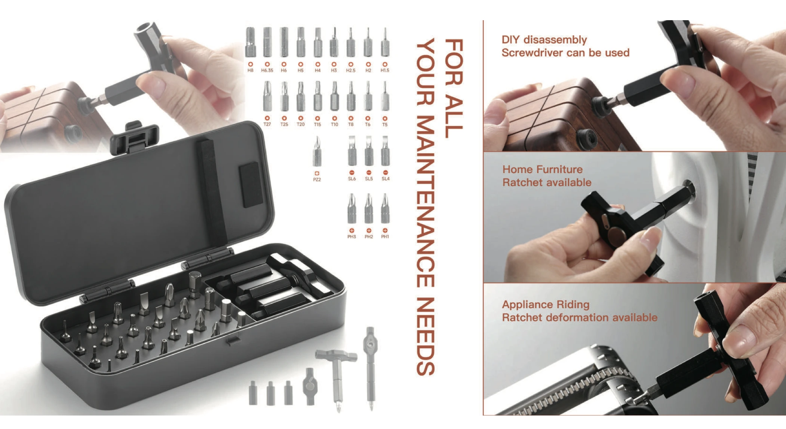
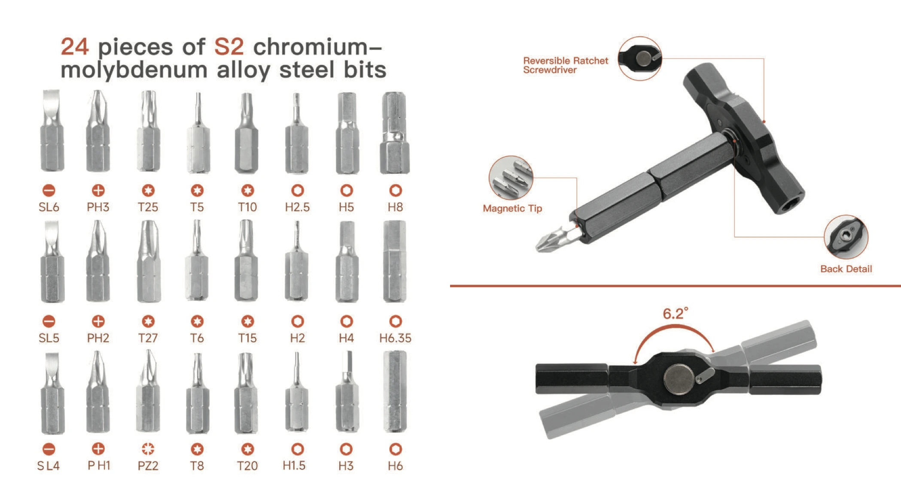
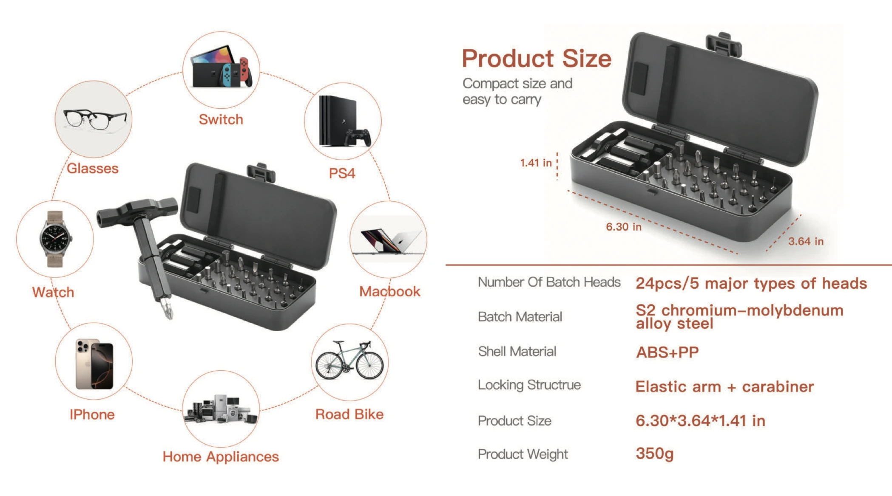
02 / ELECTRICAL DISCONNECT PLIERS不同工具，
不同工具，
相同的表达秩序。
以拆卸钳为另一组产品，
展示功能、握持与局部结构。
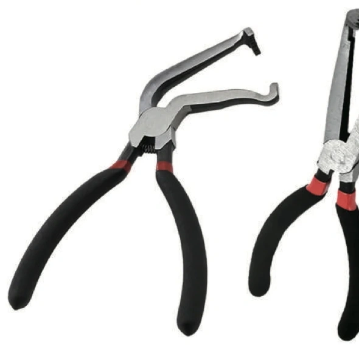
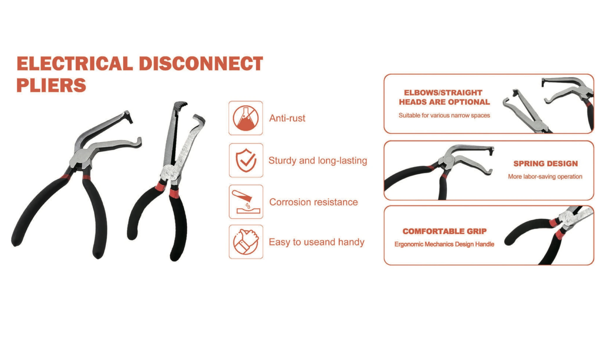
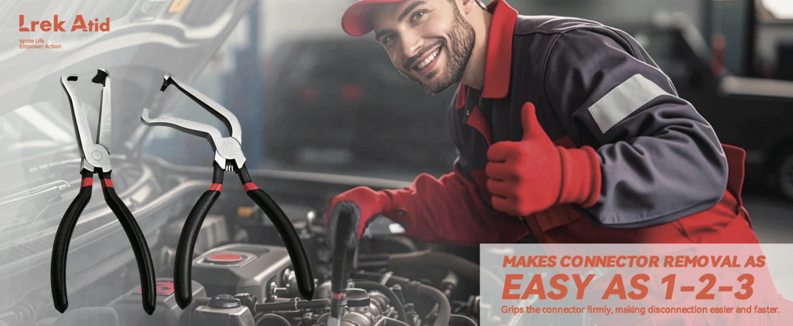
06 / ONE CONNECTED IDENTITYLREK ATID
从品牌的第一眼，
到产品的每一处。
Ignite Life
Empower Action
视觉设计 / 张千
品牌标志 · 商品内容 · 作品集品牌延展
标志、工具房画面及商品页面来自原项目素材。
包装、说明卡与封口贴为本次作品集新增概念；包装场景使用 AI 辅助生成。
原商品页面中的参数和英文保留原稿，不作为本次重新验证的产品声明。